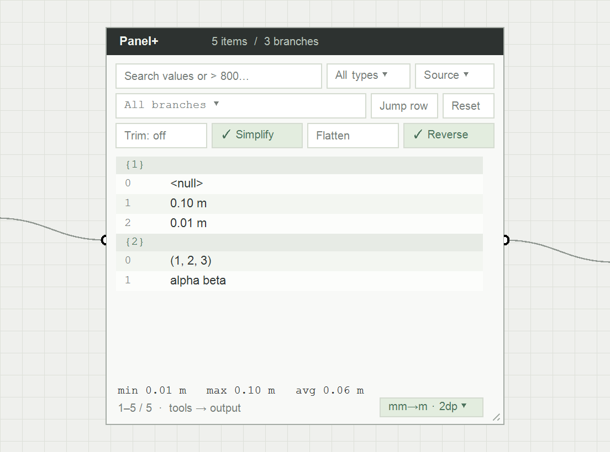
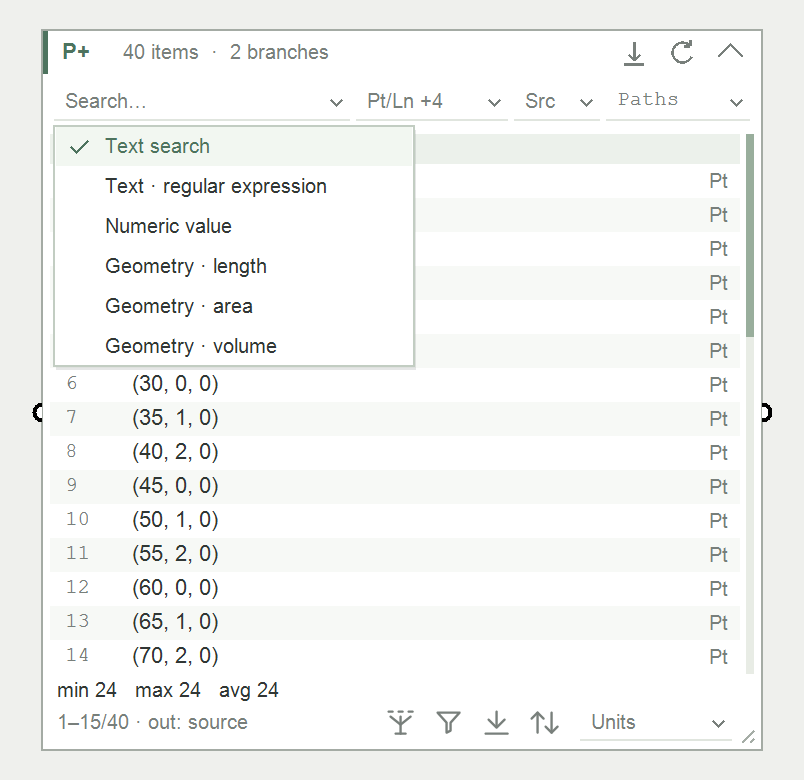
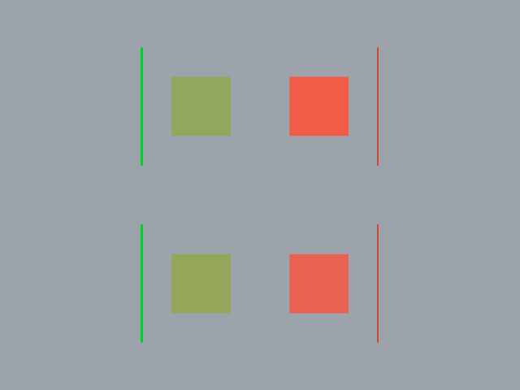
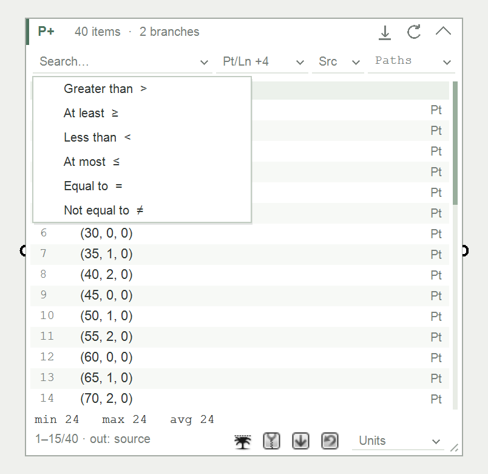
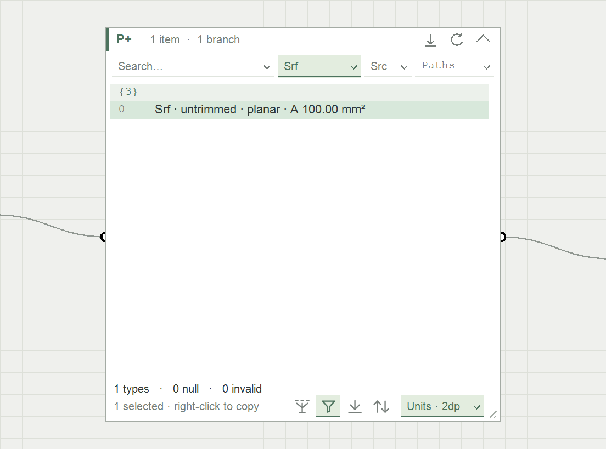
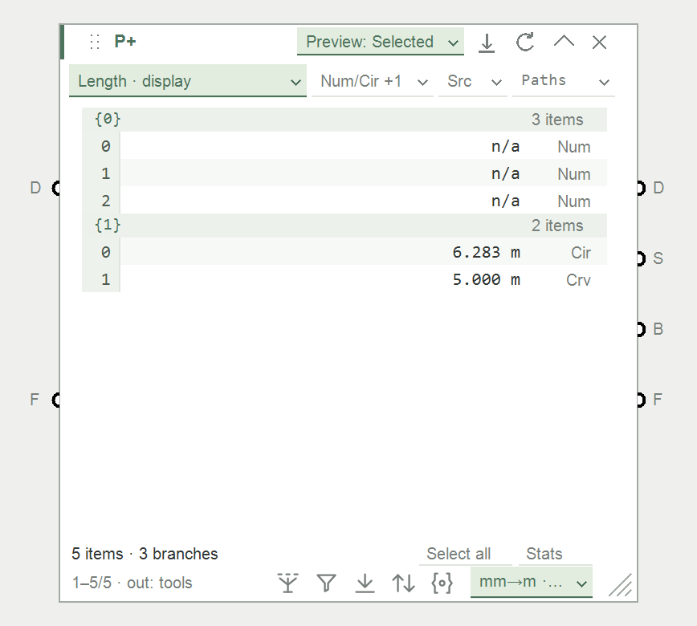

Calm, polished product story. A panel grows from the canvas; a search narrows the rows, then matching geometry lights up. Ends on the Panel+ name.


A brisk feature reel. Three clear chapters and close-up interface details communicate breadth, with simple captions and quick cuts.

A practical mini-story built around one task: inspect curve lengths, filter them, and preview the matching geometry. Fewer features, more cause and effect.